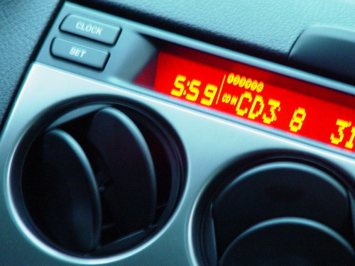
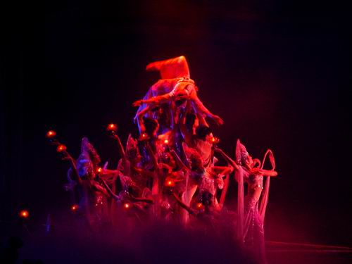
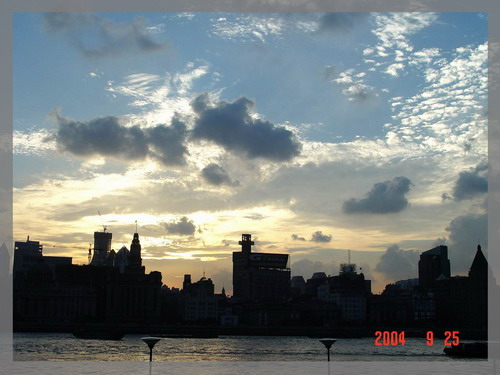
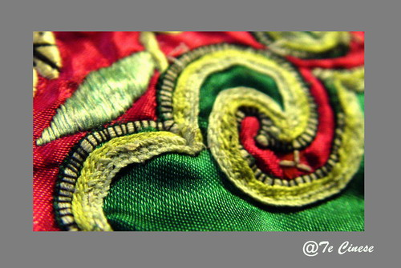
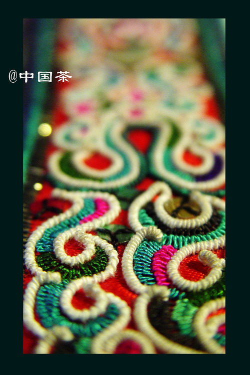

5°微笑 @ Sep 12, 2005





 原来一切就会转瞬既逝。
原来一切就会转瞬既逝。
原来一切还将周而复始。
原来一切不著痕迹，仅为天地存于那心......
她闭着自己的眼睛。
不是害羞。是她潜意识地去感知一个全然属于自己的世界......她只需要一切的感知。
这沸沸扬扬的晕眩，随着音符滑过圆盘滑过红绿灯滑过一条狭长的街道...左转右转...被苍白的路灯剪散，风又吹扬...
假如一切因此就会失去平衡？更何况她已有了一个成年女人的愁倦......昙天下不知谁的灯还亮着温暖的橘色，与她的凝望相默契，那时侯很自然得留下她一个人。
曾以为秋是东郊一片金黄的落叶，是一片温馨的灯光，是眩目的阳光和乍凉的夜晚。谁知秋有一种距离，象故意疏远的一些亲近，即使用手触摸，也能感觉指间所存在的压抑与渴望......语言如此单薄，那声音终会袅袅地消失，也不该写下只言片语，这似乎也是亵渎。不如默默望一眼，产生一些遗憾和神秘地感知，从今年到来年，或许是一辈子。
秋天就会结束，不管怎样，下一个季节还在继续......
大朋友不会变化多端，很包容...给人以安全感。我为有这样的朋友感到快乐！
Christina，首先，很难过你的狗狗。那确实是一只很可爱的狗狗。
你丢狗狗的那几天，也正是我最不开心的几天：工作太忙少睡觉，硬碟又忽然坏了，几年中拍的照片全失去了。再加上一些其它的事情。天又热。
不过我一直认为你不该养狗:养狗是闲人的事情。
其次，喜欢你最近的那几张光膀子的照片，以及日记。
似乎你只有在幽思怨想的时候才能写出好的（有思想有感情的）东西。
也许那才是真正的你。人在社会中生存，会不同程度地屈服于人群的压力。但最终又回到自己，因为只有成为自己才最舒适，像脱掉了鞋子光着脚一样自如。
不要为自己的与人不同而不安。
Be yourself。
这是尚存气息下的最佳选择，选择不去在意或者放弃，当你感到没有能力和信心去把握某件事情时。这世界变化如此得快，必须有足够的无知与无畏，然而眼下这已是你有关青春的另一种遗失！如若理性逻辑再出现故障，这世界，让人如何了得？
一个朋友告诉我南京有一家汽车改装厂，可以改装车子，他准备过两天去装个涡轮增压。据说一个初级的改装只要2/3000，可以选用静音的排气管，声音不大。人家外面的车子都有T字头的,，自己改一下不也是1.6T了吗?他哈哈的笑道：“你的也就是2.0T了。以后车上座几个胖子我也不在意了 ，车上四个人上坡都感到没什么劲呢！一个涡轮才800元，不如你一个水晶贵呢。基础改装全部做了才3000元，你可有兴趣？......我现在感觉我正在向着汽车DIY的方向发展.....以后说不定自己改改这个改改那个的，不是很好吗？根据自己的需要改装车子，COOL极了，早晚我会搞明白这些东西是怎么搞的。人家的车从你边上飞过去，你心情会好? 就算车不如人家的快，你也可以挡住它吧！（这种心理我怎么从来没有过呢？难道男人的胜负心太重？）http://www.qcgz.cn/Index.html这是那家南京的改装厂的联系方式，你可以问问他M6有什么可以改的，说不定可以改出不错的效果呢？！”我脑海里立刻浮现出电影中飙车的镜头，我穿着陈晓春的皮衣皮裤....真cool！我们都必须很理性的把持住自己，这世界随时随地都能让人疯狂，nnd…..
想起前天晚上大约11点多钟，在清凉山公园附近，两辆改装过的Bora从我的车边争相呼啸而过，发动机的声音震响整个街道，恍如置身于《头文字D》的场景里，当我惊魂未定那两辆车已经不见踪影。Michael说：“有一天我回家. 前面一辆路虎，我在它的后面等红灯， 绿灯一亮， 它就像箭一样射出去了。 看的我嘴张的合不起来了。 强！”事实上当我车内音响开到15时，我已经觉得自己够“漂移”了，无论如何一种生活方式的诞生需要的是心情和实力。
漂移（Drifting）：后轮失去大部分（或者全部）抓地力，同时前轮要能保持抓地力（最多只能失去小部分，最好当然是获得额外的抓地力了），这时只要前轮有一定的横向力，车就甩尾，便会产生漂移！
在中国，除了少有的几个城市—-台湾、香港、澳门、上海等等外，而其他的城市并没有专业的赛车场地！在如今赛车比赛漫天飞舞的情形下，中国却没有几个能称之正规赛车比赛的赛事，没有几条能用与正规比赛的赛道，在全球也没有几个能称之为专业赛车比赛的车手！要是这在其他国家这可能算不得什么，但是对堂堂大国—有东方巨龙、东方雄狮之称的中国而言，这不得不说是一种悲哀！十四亿人口啊，居然找不到一个象样的......汗颜呐！
于是在这种情形下，一种新的“非法种族”—飑车一族就理所当然的诞生了！你要是还不明白，你自个儿开快车去各大城市试一下，你看交警追不追你，呵呵~~~所以飙车一族一直以来都是生活在黑暗之中的，也只能在黑暗中生活！在凌晨一点到四点的时间段，绝对是属于这些年轻的飙车一族的……
“傅彪辞世，享年42岁......”当中国的名人开始相继死亡，还有谁的心情能好起来？
早晨上班的路上想听尖利的摇滚，车载CD机里的碟片已经面目全非，找不到一首为当时的心情服务的旋律。这潮湿而沉闷的天气，何时能被阳光和清新的空气替代？Carrie写到：在这个城市里，你要做的是如何保护自己及尽快完成交易，此时爱情也不得不妥协......因为好奇而想要知道真相，这好比剥洋葱，剥到最后是自己泪流满面。
《You And Your Sister》.mp3
这歌收录在1991年乐队发表了最后一张专辑《Blood》里，This Mortal Coil应该是公认的4AD 最出色的乐队之一。缓慢的吉它和弦，轻柔的女声独唱，配器堪称完美。翻唱自Chris Bell。
 you say my love for you’s not real
you say my love for you’s not real
but you don’t know how real it feels
all I want to do is to spend some time with you
so I can hold you,hold you
your sister says that I’m no good
I’d reassuer her if I could
all I want to do is to spend some time with you
so I can hold you,hold you
friends fail every day
I want to hear you say
Your love won’t be leaving
Your eyes aren’t deceiving
fears will soon fade away
smile now ,don’t be afraid
all I want to do is to spend some time with you
so I can hold you,hold you
so let me whisper in you ear
don’t you worry they can’t hear
all I want to do is to spend some time with you
so I can hold you,hold you
人若没有失落感，就能生活得平静。
我有些不安，不能就这么坐着，得去做点什么。
下午和姐姐姐夫一起去观看外甥女最后一次军训。在树人国际学校对面的南京政治学院的校园里。大约13个班，呈方块儿列队等候检阅，远远看见调皮的学生在队伍里面夸张着扭动身体摆动双臂，想起别人的小时侯或许也是如此顽皮而可爱的唱着打鸭归来被罚站的情形？依依没了平时的娇嗲扭捏，她的表情不容我们忽视她正在做的那件事情，是多么的神圣和庄严。这些刚刚升入初中的孩子表情平静，神态自如，围观的家长象是一大群FANS，手捧各种数码非数码摄像产品，追随迷彩服们左挪右移，有位年轻的妈妈匍匐着边拍照边情不自禁地说道：“太好了，简直太好了。”不时发出一串刻意压制住的笑声，这是FANS中比较癫狂的一种。
生活使许多人迷失方向，在不可知的地方迷失自我。我不厌其烦地想着自己，也想着他。一个善良有辨别是非能力的人，应该是可爱的。无法承诺什么，就以各自喜欢的姿势坐着，时间可以拉长也能够缩短。都市的嘈杂污染及不守交通规则的人群，使人不能从容的找到一片安静的空地，我常常在每个红绿灯的十字路口不知所措，怅然若失。生活中充斥着各种变数，也有许多不如意之处，有时阳光和花朵也不能使人摆脱无动于衷的境地，我有种被刺穿的感觉......快乐独立于现实之外，象一部节奏缓慢的文艺片，女人开始变得象婴儿一样。
晚上的紫金大戏院内部预演《妈祖》舞剧。听朋友说这部舞剧1999年编排，先后到香港澳门巡演，这次是停演四年之后复演，9月初受邀到厦门福建演出，如果顺利可能还会去台湾。前线歌舞团当时想找题材编排一部舞剧，想到了妈祖。领舞是从广州请来的阎红霞，和我同年生，刚刚生过孩子。部队文艺团体编排了这样一部宣扬迷信的舞剧，似乎又有些不妥，于是有关舞剧的宣传稍许薄弱了。据说《妈祖》所有的服装是请上海的一个舞台服装设计公司设计的，主设计师手下清一色的男士，一套难民服的费用就是几百元。演出结束后等coffin换了服装一起吃宵夜，金顺烧鸡公。今天过到此可算是完美的结束？




我对一位异性印象好可能会是因为比较崇拜他,但是很快这种感觉就会消失的，因为没有一个人是真正的偶像。”-张静初

从家出来，撞见对面邻居的奶奶和她的孙子，我一脸茫然地按了电梯，我的母亲伸出脑袋热情的和对方打招呼，在母亲的促动下我也寒暄了几句...改变环境其实和改变自己一样困难，顺其自然实在是无奈之举。想想我们的人生早有天定，除非遭遇人生突变或是具备非凡的勇气。只是这定局的人生，浸泡在弥漫的八卦中，有许多crazy，有许多unimaginable许多的depressed的时候~~

The arrowhead
Shot by EverKiss
三伏的最后一天，有细雨纷飞时的困倦徜徉在中午的音符里，混沌的美。
早晨不可避免的迟到，拖沓在堵塞的道路上，这天的状态有神经衰弱的奕奕神采。进公司车库前面遇见一辆MOD，牛一般的速度行驶过每个弯道，每每让后面的车在斜坡上等待N秒，等我倒好车，回头张望那辆一头扎进车位的MOD，里面坐着另外一个部门的经理，仍然孜孜不倦地在挪动着他的车。同情油然而生！上周有个老年经理也是这样的状况，让跟在后面的我好生着急呀，他们有的是耐心和定力。
有关流行，开始只是刹那间的事情，不仅包含时装，也包含了我们生活中的各种有趣元素。比如从早年的QQ、ICQ到现在各个办公室里的MSN、SKYPE，从过去的黑白灰色到现在的粉蓝粉红粉黄，每个人都象只可爱的兔子屹立在流动的街头。据说在《sex and the city》之后，美国另一部电视剧《绝望的主妇Desperate Housewives》忽然之间开始流行，走红程度似乎要超越大红大紫的《sex and the city》。也许不用多久我们就可以在各自城市的街头购买到这部电视剧的DVD，流行的速度就是分秒那么迅速，流行未必昂贵！
读到安妮宝贝的《植物女子》，摘节片段如下：
是在王府井新天地的一个茶餐厅里，对一个年轻男子突然说起，内心对一类人的喜好。我说，我喜欢植物一样的女子。说这句话的时候，我们已经观察了所限空间里的大部分男男女女。这是同为写作者的习惯。眼睛如同一个精细刻度的镜头，冷静细致，自动扫描所有进入范围的对象，寻求焦点来定格。
......我们对好看女子的定义是，她若走进人群之中，如同遗世独立，突兀的存在会让他人立时感觉空气发生变化。而普通人一走进人群，，如同水滴汇入海洋，不见痕迹。这定义不免偏执，却很分明。并且和五官无关。
......但是我很少遇见植物一样的女子。我认定植物一样的人是好看的。比如在巴黎遇见法比奥拉的时候，她已经四十岁了。也穿刺绣的宽长袖子的衣服，涂鲜红的口红，戴金耳环和大颗宝石的戒指。起初一直不太明白她吸引我的气息何在，未必是她跟我畅谈法国作家的左派倾向，她关心的环保问题和学佛心得，以及去台湾学唱京剧的兴趣有关。很多女人都有这样或那样的经历，有些甚至还更为奇特孤拐。只是体会到的所言所行，没有任何浮夸。待人真诚实在，有一种粗砺的优雅。且她的人生观是开阔而坚定的，自成体系，与世间也无太多瓜葛。
女人若有一些男人的品格，便会有一种结结实实的美。所以，我喜欢略带中性气质的女子。这种中性气质，不是说她不能穿高跟鞋和小礼服裙。中性气质，代表一种内心格局，一种独特的情怀，一种力量所在。在植物性上来说，若一个少女象墙头蔷薇一样绚烂天真，便是人间的春色，成熟之后的女子，便可接近树的笃定和静默。
毫无睡意，清醒的犹如白昼，你呢？
在听Diana Krall《The Girl in the Other Room》，David Benoit & Russ Freeman的《When She Believed In Me》，《Swept Away》，Tom Grant & Peter White的《Fantasy》，Acoustic Alchemy 的《Say Yeah》，Peter White的《Caravan of Dreams》，《Together Again》，《City of Lights》，《I Do》- (Cherish You) (98°)，《Ain’t No Sunshine》- (Lighthouse Family)，Enrique Iglesias的《Say It》，Boney James的《It’s On》......
在贵州购买的小玩意和刺绣，有几张刺绣是老太太年轻出嫁时绣的，是她们压箱底的宝贝。虽然年代久远、陈旧但色彩依然鲜艳，针线清晰，让人爱不释手。有的刺绣直接从衣服上截下来，这些现在成了宝贵的传统艺术品。



